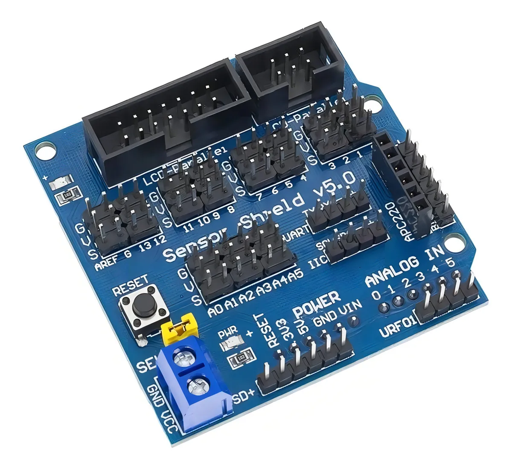
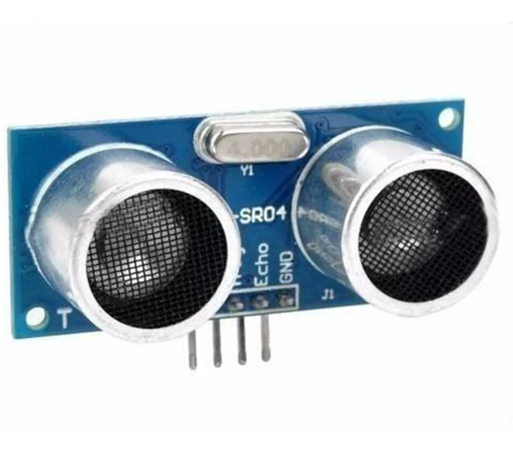
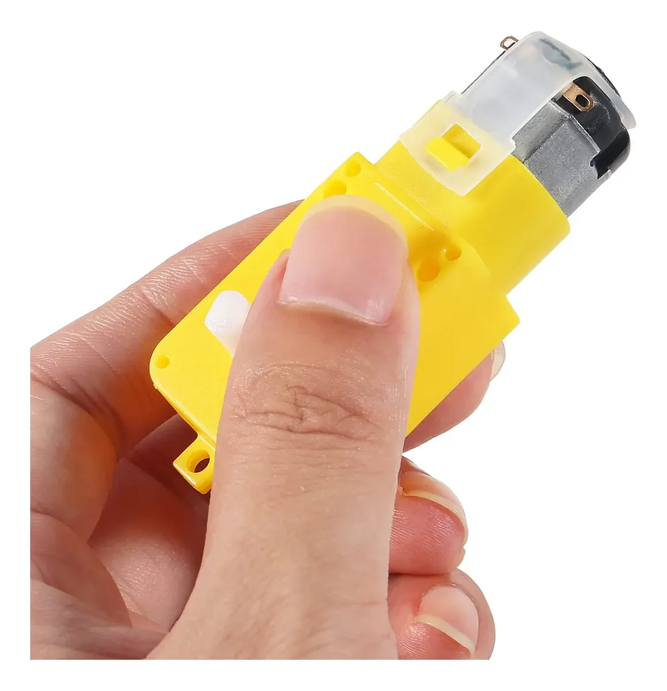
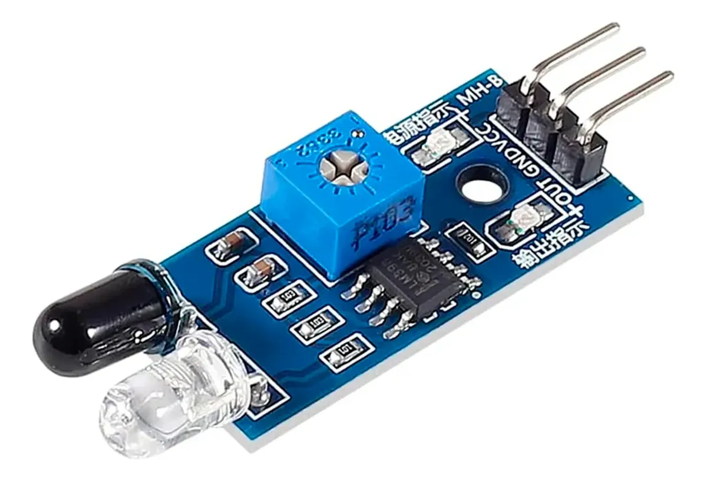
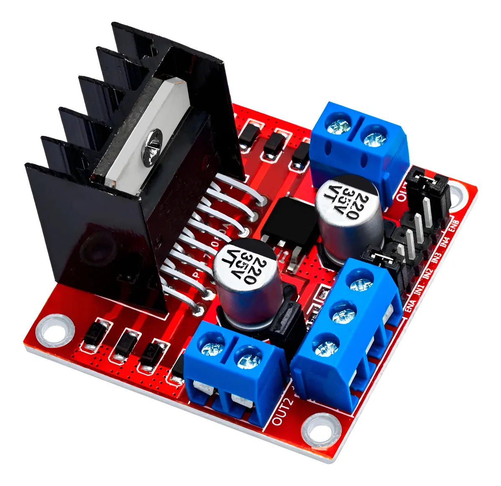
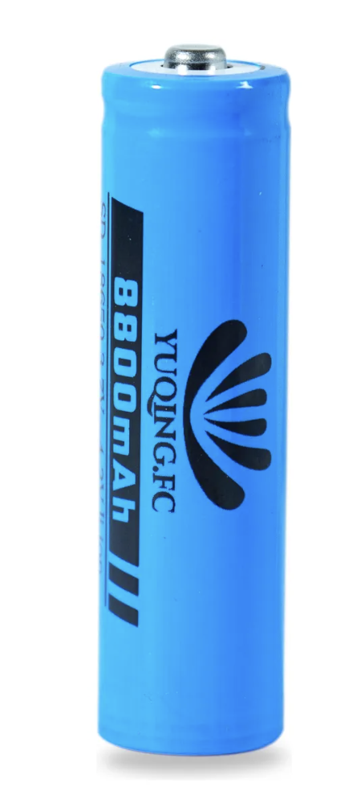
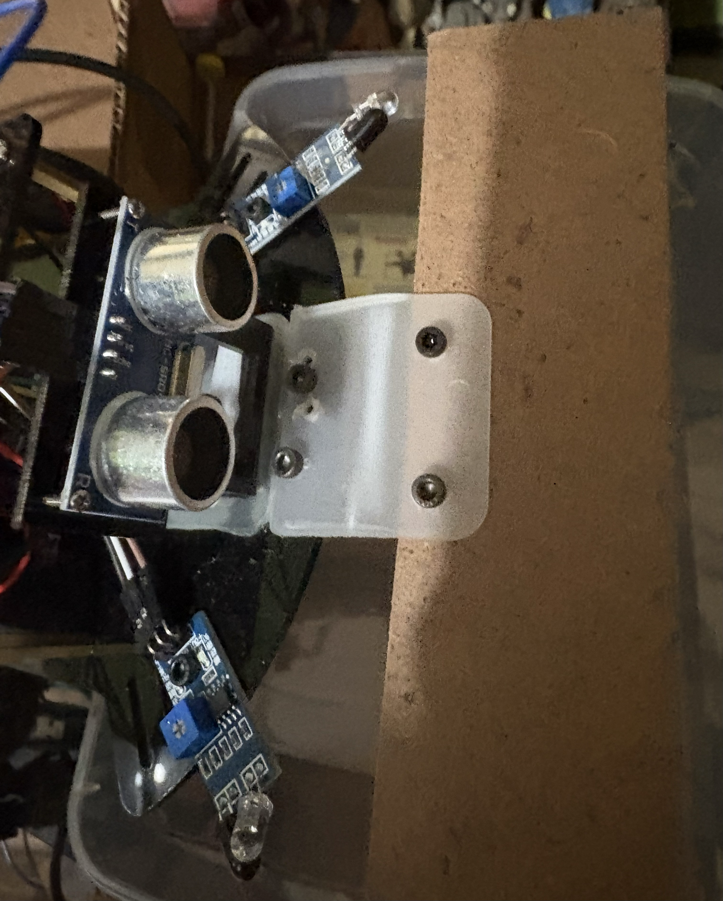
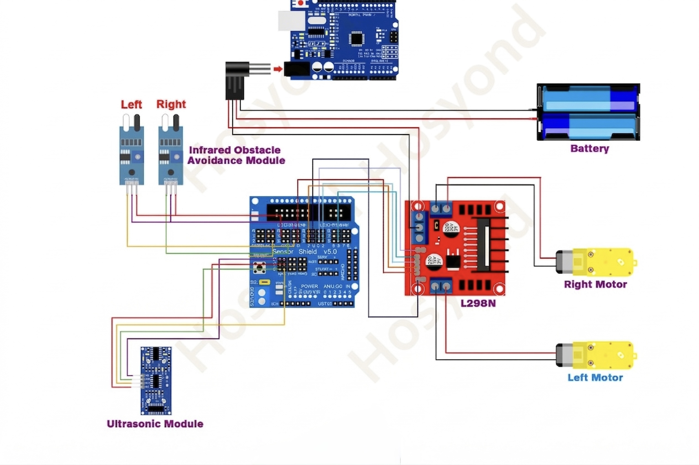

Guía de trabajo y practicario
Proyecto: Robot Sumo Autónomo 2WD con Arduino
Completa la guía en pantalla, registra tus observaciones del robot y al finalizar guarda tu PDF con respuestas y evidencias.
Propósito
Construir y programar un robot sumo autónomo de 2 ruedas capaz de detectar el borde del área de combate, identificar un oponente, atacar cuando lo detecte y evitar salir del dojo.
Durante esta práctica se desarrollan habilidades de pensamiento computacional, análisis de sistemas, resolución de problemas y mejora continua.
Materiales
Se recomienda el siguiente kit educativo porque incluye la mayoría de los componentes necesarios: chasis, motores, ruedas y cableado.
- Arduino UNO
- Sensor Shield v5.0
- Driver L298N
- 2 motores DC
- 2 sensores IR
- 1 sensor ultrasónico
- Baterías 18650
- Cables Dupont
Para este proyecto se recomienda usar baterías 18650, ya que el robot necesita más potencia para mover los motores con fuerza, empujar al oponente y mantener un funcionamiento más estable durante el combate.
Componentes principales
Estos son algunos de los componentes más importantes del robot y la función que cumplen dentro del sistema.
Sensor Shield v5.0
El shield facilita las conexiones del Arduino porque organiza los pines de entrada y salida. Permite conectar sensores, servos y módulos de forma más rápida y ordenada, algo muy útil cuando el robot integra varios dispositivos al mismo tiempo.

Sensor ultrasónico
El sensor ultrasónico mide distancias enviando una onda de sonido y calculando cuánto tarda en rebotar. En este robot sirve para detectar al oponente al frente y decidir cuándo avanzar para atacar.

Motorreductor
El motorreductor convierte energía eléctrica en movimiento y, gracias a su caja reductora, entrega más fuerza y control. Eso permite que el robot tenga empuje suficiente para moverse y empujar al rival.

Sensor IR
Los sensores infrarrojos detectan diferencias de color o reflexión en el piso. En el robot sumo se usan para identificar el borde del dojo y evitar que el robot salga del área de combate.

Puente H
El puente H, en este caso el L298N, controla el sentido de giro y la velocidad de los motores. Gracias a este módulo el robot puede avanzar, retroceder y girar según lo indiquen las decisiones del programa.

Batería 18650
La batería 18650 es una fuente de energía recargable muy utilizada en proyectos de robótica móvil. En un robot sumo es importante porque entrega la potencia necesaria para alimentar motores, sensores y controladores sin que el sistema pierda fuerza con facilidad.

Topes o palas
Un elemento muy característico de los robots sumo son los topes o palas frontales. Estas piezas ayudan a empujar al rival, levantar ligeramente su frente o desestabilizarlo, mejorando la capacidad de ataque del robot durante el combate.
Además de proteger la parte delantera, los topes permiten aprovechar mejor la fuerza de los motores, porque la energía del empuje se dirige hacia el oponente de forma más eficiente.

Conexiones
L298N hacia Arduino con Shield
- IN1 -> D7
- IN2 -> D4
- IN3 -> D3
- IN4 -> D2
- ENA -> D5
- ENB -> D6
Sensores
- IR izquierdo -> A0
- IR derecho -> A1
- TRIG -> A2
- ECHO -> A3
Importante: conectar GND del Arduino con GND del L298N.

Video de referencia
Antecedentes
Antes de iniciar, responde las siguientes preguntas:
Lógica del robot
El comportamiento general del robot se resume así:
- Detecta borde -> retrocede y gira
- Detecta enemigo -> avanza y ataca
- No detecta nada -> gira para buscar
Código completo
// ROBOT SUMO AUTÓNOMO 2 RUEDAS
const int IN1 = 7;
const int IN2 = 4;
const int IN3 = 3;
const int IN4 = 2;
const int ENA = 5;
const int ENB = 6;
const int IR_LEFT = A0;
const int IR_RIGHT = A1;
const int US_TRIG = A2;
const int US_ECHO = A3;
bool DRIVE_INVERTED = true;
int IR_THRESHOLD = 450;
int ENEMY_DISTANCE_CM = 45;
int SPEED_ATTACK = 255;
int SPEED_SEARCH = 190;
int SPEED_ESCAPE = 210;
void motorStop() {
digitalWrite(IN1, LOW); digitalWrite(IN2, LOW);
digitalWrite(IN3, LOW); digitalWrite(IN4, LOW);
analogWrite(ENA, 0); analogWrite(ENB, 0);
}
void motorForward(int spd) {
if (!DRIVE_INVERTED) {
digitalWrite(IN1, HIGH); digitalWrite(IN2, LOW);
digitalWrite(IN3, HIGH); digitalWrite(IN4, LOW);
} else {
digitalWrite(IN1, LOW); digitalWrite(IN2, HIGH);
digitalWrite(IN3, LOW); digitalWrite(IN4, HIGH);
}
analogWrite(ENA, spd); analogWrite(ENB, spd);
}
void motorBackward(int spd) {
if (!DRIVE_INVERTED) {
digitalWrite(IN1, LOW); digitalWrite(IN2, HIGH);
digitalWrite(IN3, LOW); digitalWrite(IN4, HIGH);
} else {
digitalWrite(IN1, HIGH); digitalWrite(IN2, LOW);
digitalWrite(IN3, HIGH); digitalWrite(IN4, LOW);
}
analogWrite(ENA, spd); analogWrite(ENB, spd);
}
void turnLeft(int spd) {
if (!DRIVE_INVERTED) {
digitalWrite(IN1, LOW); digitalWrite(IN2, HIGH);
digitalWrite(IN3, HIGH); digitalWrite(IN4, LOW);
} else {
digitalWrite(IN1, HIGH); digitalWrite(IN2, LOW);
digitalWrite(IN3, LOW); digitalWrite(IN4, HIGH);
}
analogWrite(ENA, spd); analogWrite(ENB, spd);
}
void turnRight(int spd) {
if (!DRIVE_INVERTED) {
digitalWrite(IN1, HIGH); digitalWrite(IN2, LOW);
digitalWrite(IN3, LOW); digitalWrite(IN4, HIGH);
} else {
digitalWrite(IN1, LOW); digitalWrite(IN2, HIGH);
digitalWrite(IN3, HIGH); digitalWrite(IN4, LOW);
}
analogWrite(ENA, spd); analogWrite(ENB, spd);
}
bool edgeLeft() {
return analogRead(IR_LEFT) < IR_THRESHOLD;
}
bool edgeRight() {
return analogRead(IR_RIGHT) < IR_THRESHOLD;
}
long readDistanceCM() {
digitalWrite(US_TRIG, LOW);
delayMicroseconds(2);
digitalWrite(US_TRIG, HIGH);
delayMicroseconds(10);
digitalWrite(US_TRIG, LOW);
long duration = pulseIn(US_ECHO, HIGH, 25000UL);
if (duration == 0) return 999;
return duration / 58;
}
void setup() {
pinMode(IN1, OUTPUT); pinMode(IN2, OUTPUT);
pinMode(IN3, OUTPUT); pinMode(IN4, OUTPUT);
pinMode(ENA, OUTPUT); pinMode(ENB, OUTPUT);
pinMode(US_TRIG, OUTPUT);
pinMode(US_ECHO, INPUT);
Serial.begin(9600);
motorStop();
delay(500);
}
void loop() {
bool L = edgeLeft();
bool R = edgeRight();
long d = readDistanceCM();
if (L && R) {
motorBackward(SPEED_ESCAPE);
delay(250);
turnRight(SPEED_ESCAPE);
delay(220);
return;
}
if (L) {
motorBackward(SPEED_ESCAPE);
delay(220);
turnRight(SPEED_ESCAPE);
delay(200);
return;
}
if (R) {
motorBackward(SPEED_ESCAPE);
delay(220);
turnLeft(SPEED_ESCAPE);
delay(200);
return;
}
if (d <= ENEMY_DISTANCE_CM) {
motorForward(SPEED_ATTACK);
} else {
turnLeft(SPEED_SEARCH);
delay(160);
motorForward(SPEED_SEARCH);
delay(120);
}
delay(15);
}Desarrollo de la práctica
- Identifica los componentes.
- Realiza el cableado.
- Carga el código.
- Realiza pruebas.
- Ajusta parámetros.
Pensamiento computacional
Análisis
Experimentación y ajuste del robot
Propósito: analizar el comportamiento del robot modificando variables del programa para mejorar su desempeño en detección de borde, detección de oponente, velocidad y estabilidad.
¿Cómo realizar los cambios?
- Abre el código en Arduino IDE.
- Ubica las variables al inicio del programa.
- Cambia solo una variable a la vez.
- Guarda el cambio.
- Presiona Upload o Subir.
- Espera a que el programa se cargue.
int IR_THRESHOLD = 450;
int ENEMY_DISTANCE_CM = 45;
int SPEED_ATTACK = 255;
int SPEED_SEARCH = 190;
bool DRIVE_INVERTED = true;¿Cómo realizar las pruebas?
Prueba 1: Detección de enemigo
- Acerca tu mano u objeto al sensor ultrasónico.
- Observa si ataca rápido.
- Observa si tarda en reaccionar.
- Observa si no detecta.
Prueba 2: Detección de borde
- Coloca el robot cerca del borde del dojo.
- Observa si retrocede correctamente.
- Observa si se queda quieto.
- Observa si se sale.
Prueba 3: Búsqueda
- Coloca el robot sin obstáculos.
- Observa si gira para buscar.
- Observa si se mueve de forma estable.
Registro de resultados
| Experimento | Cambio realizado | Cómo se probó | Resultado |
|---|---|---|---|
| IR_THRESHOLD | |||
| ENEMY_DISTANCE_CM | |||
| SPEED_ATTACK | |||
| SPEED_SEARCH | |||
| DRIVE_INVERTED |
Experimentos sugeridos
1. Sensibilidad del sensor IR
Modificar:
int IR_THRESHOLD = 450;Probar valores: 300, 400, 500, 600.
Prueba: colocar el robot en el borde.
2. Distancia de ataque
Modificar:
int ENEMY_DISTANCE_CM = 45;Probar: 20, 30, 40, 50.
Prueba: acercar un objeto.
3. Velocidad de ataque
Modificar:
int SPEED_ATTACK = 255;Probar: 200, 230, 255.
Prueba: simulación de combate.
4. Velocidad de búsqueda
Modificar:
int SPEED_SEARCH = 190;Probar: 150, 170, 200.
Prueba: robot sin enemigo.
5. Dirección de motores
Modificar:
bool DRIVE_INVERTED = true;Cambiar a:
bool DRIVE_INVERTED = false;Prueba: observar si ahora avanza correctamente.
Análisis de la experimentación
Monitor Serial y calibración
Propósito: observar los valores reales de los sensores para ajustar correctamente el robot.
Activar Monitor Serial
- Abre Arduino IDE.
- Haz clic en Monitor Serial.
- Configura 9600 baudios.
Datos que muestra el robot
Ejemplo:
IR_L = 520 | IR_R = 510 | Distancia = 80
IR_L = 300 | IR_R = 280 | Distancia = 25Interpretación
Sensores IR
| Superficie | Valor |
|---|---|
| Blanco | alto (400-600) |
| Negro | bajo (0-300) |
Detecta borde cuando el valor es menor al IR_THRESHOLD.
Ultrasonido
| Situación | Valor |
|---|---|
| Lejos | 50-200 cm |
| Cerca | 5-40 cm |
| Sin detección | 999 |
Calibración del IR
Paso 1: coloca el robot en superficie blanca y anota valores.
Paso 2: coloca el sensor en línea negra y anota valores.
Paso 3: calcula el umbral.
IR_THRESHOLD = (valor blanco + valor negro) / 2Ejemplo:
(520 + 250) / 2 = 385Entonces:
int IR_THRESHOLD = 385;Actividad
| Superficie | IR izquierdo | IR derecho |
|---|---|---|
| Blanco | ||
| Negro |
Problemas comunes
- Detecta borde todo el tiempo -> umbral muy alto.
- No detecta borde -> umbral muy bajo.
- Valores inestables -> luz o conexión.
Reflexión sobre calibración
Practicario
Comprensión
Código
Lógica
Diagnóstico
Reflexión
Aplicación real
Autoevaluación
| Criterio | Sí | No |
|---|---|---|
| Entendí sensores | ||
| Programé | ||
| Probé | ||
| Detecté errores | ||
| Mejoré el sistema |
Evidencias
- Fotos del robot
- Video funcionando
- Código
- Respuestas
Reflexión final
Redacta mínimo 10 líneas explicando qué aprendiste, qué dificultades tuviste, cómo las resolviste y cómo mejorarías el robot.
Cierre
"Un robot no se mejora cambiando piezas, se mejora entendiendo sus datos."
Firma de revisión
Profesor: ____________________________________